GOVERNMENT OF TAMIL NADU
STANDARD EIGHT
MATHEMATICS
A Publication under Free Textbook Programme of Government of Tamil Nadu
Department of School Education
Untouchability is Inhuman and a Crime
Government of Tamil Nadu
First Edition - 2019
Revised Edition – 2020, 2022, 2023 (Published under New Syllabus)
NOT FOR SALE
Content Creation
State Council of Educational Research and Training
© S C E R T 2019
Printing & Publishing
Tamil Nadu Textbook and Educational Services Corporation
Mathematics is a unique symbolic language in which the whole world works and acts accordingly. This text book is an attempt to make learning of mathematics easy for the students community.
Mathematics is not about numbers, equations, computations or algorithms; it is about understanding
-William Paul Thurston
The main goal of mathematics in school education is to mathematise the child thought process. It will be useful to know how to mathematise than to know a lot of mathematics.
UNIT |
TITLE |
PAGE NO. |
MONTH |
1 |
1-49 |
|
|
1.1 |
1 |
June |
|
1.2 |
2 |
June |
|
1.3 |
14 |
June |
|
1.4 |
16 |
June |
|
1.5 |
20 |
June |
|
1.6 |
25 |
June |
|
1.7 |
27 |
June |
|
1.8 |
36 |
June |
|
1.9 |
39 |
June |
|
2 |
50-73 |
|
|
2.1 |
50 |
July |
|
2.2 |
52 |
July |
|
2.3 |
59 |
July |
|
2.4 |
66 |
July |
|
3 |
74-120 |
|
|
3.1 |
76 |
August |
|
3.2 |
77 |
August |
|
3.3 |
82 |
August |
|
3.4 |
84 |
August |
|
3.5 |
86 |
October |
|
3.6 |
88 |
October |
|
3.7 |
92 |
October |
|
3.8 |
97 |
October |
|
3.9 |
107 |
September |
|
3.10 |
115 |
January |
|
4 |
121-154 |
|
|
4.1 |
121 |
September |
|
4.2 |
122 |
September |
|
4.3 |
126 |
September |
|
4.4 |
132 |
September |
|
4.5 |
140 |
November |
|
4.6 |
147 |
November |
|
5 |
155-210 |
|
|
5.1 |
155 |
August |
|
5.2 |
156 |
August |
|
5.3 |
167 |
August |
|
5.4 |
167 |
August |
|
5.5 |
170 |
December |
|
5.6 |
170 |
December |
|
5.7 |
173 |
December |
|
5.8 |
174 |
December |
|
5.9 |
175 |
December |
|
5.10 |
180 |
July |
|
5.11 |
187 |
July |
|
5.12 |
192 |
November |
|
5.13 |
196 |
November |
|
5.14 |
201 |
November |
|
5.15 |
205 |
February |
|
5.16 |
207 |
February |
|
6 |
211-231 |
|
|
6.1 |
211 |
January |
|
6.2 |
212 |
January |
|
6.3 |
217 |
January |
|
6.4 |
221 |
February |
|
7 |
232-271 |
|
|
7.1 |
233 |
August |
|
7.2 |
234 |
August |
|
7.3 |
239 |
August |
|
7.4 |
243 |
November |
|
7.5 |
247 |
November |
|
7.6 |
251 |
November |
|
7.7 |
254 |
February |
|
7.8 |
262 |
February |
|
7.9 |
267 |
February |
|
|
273-280 |
|
|
|
281 |
|
STANDARD EIGHT MATHEMATICS
Let us recall the different types of numbers which we have already learnt in our earlier classes.
When we want to count, it is natural to start with numbers 1, 2, 3, 4, 5, … Isn’t it question mark
These are all called as Counting numbers or Natural numbers and their collection is denoted by N. The use of three dots at the end of the list is a notation to show that the list keeps going forever.
The natural numbers can be visualized as a ray marked with these numbers:
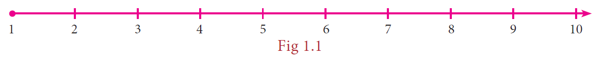
Consider the situation that yesterday my purse had money, say rupees 8, but today the purse may be empty. How many rupees are there in the purse now question mark How to denote this emptiness question mark Here comes the concept of zero which evolved to symbolize the idea of emptiness. The concept of zero, though quite natural now, was not normal to early humans. Only after hundreds of years people started thinking of it as an actual number. The difficulty was solved when the Indian Mathematicians provided the symbol for zero. The natural numbers system
Numbers page number 1
with this additional number zero became Whole numbers. The whole numbers can be visualized now as follows:
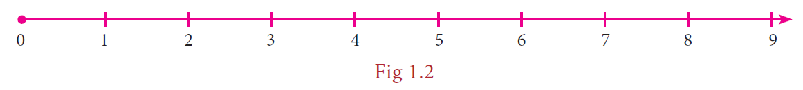
The system of whole numbers is denoted by W.
Even zero was not sufficient to solve all problems. Think what happens when 4 is taken away from 6 question mark
Draw a number line up to say 9. Mark 6 by a dot on it.
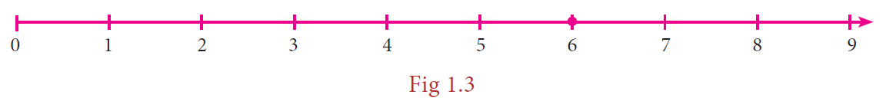
We know that, to subtract 4, we need to go 4 steps to the left side from 6. We will land on 2 and so the answer is 2. But what will happen if we want to subtract 6 from 4 question mark This situation is where the humans needed open bracket and created close bracket negative numbers.
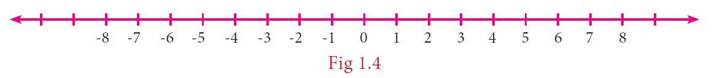
But how can a number be negative question mark Simple Exclamatory symbol just think of them as numbers less than zero. Including the negative integers with the whole numbers, we get the list of numbers called the Integers. The integers consist of zero, the natural numbers and the negatives of the natural numbers and it consists of a list of numbers that stretch in either direction without end. The entire collection of integers is denoted by Z.
MATHEMATICS ALIVE - NUMBERS IN REAL LIFE
If an orange is peeled off and 8 carpels are found, then one carpel represents the rational number 1 divided by 8.
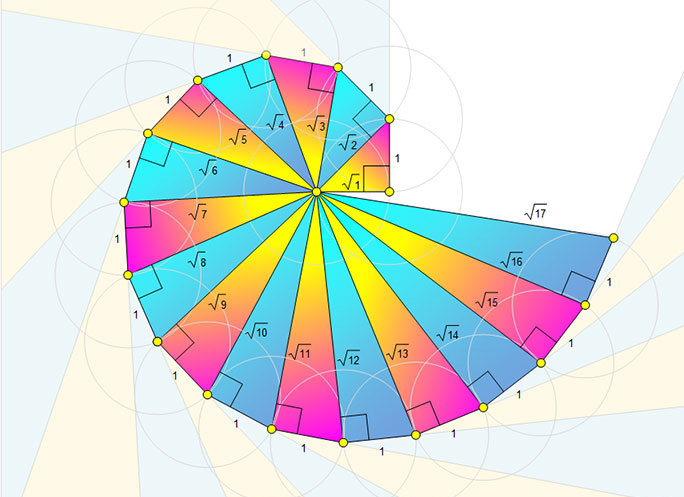
Even after coining integers, one could not relax exclamatory symbol 10 divided by 5 is no doubt fine, giving the answer 2 but is divided by 5 comfortable question mark Numbers between numbers are needed. 8 divided by 5 seen as 1.6, is a number between 1 and 2. But where does open bracket minus 3 close bracket divided by 4 lies question mark Between 0 and minus1. Similarly, where do you find
Page number 2
minus 12 divided by 5 on the number line question mark Between minus 2 and minus 3. Thus, a ratio made by dividing an integer by another integer is called a rational number. Open bracket Remember, we should not divide by zero exclamatory symbol close bracket
Formally speaking, a rational number is a number of the fractional Open bracket ratio close bracket form a divided by b, where a and b are integers and b is not equal 0. The collection of all rational numbers is denoted by Q. Non-negative rational numbers may be thought of as fractions. They can also be expressed as decimals and percents.
Since operations on rational numbers demand a basic knowledge of operations on fractions, let us recall through an exercise some of the basic ideas related to fractions.
Recap Exercise
1. The simplest form of 125 divided by 200 is dash.
2. Which of the following is not an equivalent fraction of 8 divided by 12 question mark
Open bracket A closed bracket 2 divided by 3 open bracket B closed bracket 16 divided by 24
Open bracket C closed bracket 32 divided by 60 open bracket D close bracket 24 divided by 36
3. Which is bigger: 4 divided by 5 or 8 divides 9 question mark
4. Add the fractions: 3 divided by 5 plus 5 divided by 8 plus 7 divided by 10
5. Simplify: 1 divided by 8 minus open bracket 1 divided by 6 minus 1 divided by 4 close bracket
6. Multiply: mixed fraction 2 into 3 divided by 5 and mixed fraction 1 into 4 divided by 7
7. Divide: 7divided by 36 by 35 divided by 81
8. Fill in the boxes: dash divided by 66 equal to 70 divided by dash equal to 28 divided by 44 equal to dash divided by 121 equal to 7 divided by dash.
9. In a city7 divided by 20of the population are women and 1 divided by 4 are children. Find the fraction of the population of men.
10. Represent open bracket 1 divided by 2 plus 1 divided by 4 close bracket by a diagram.
1. Is the number minus7 a rational number question mark Why question mark
2. Write any 6 rational numbers between 0 and 1.
The word ‘ratio’ in Math refers to the comparison of the sizes of two different quantities of any kind. For example, if there is one teacher for every 20 students in a class, then the ratio of teachers to students is 1 is to 20. Ratios are often written as fractions and so 1 is to 20 equal to 1 divided by 20. For this reason, numbers in the fractions form are called rational numbers.
Page number 3
Locating the rational numbers on a number line is an important skill. For example, to represent the number minus 3 divided by 4 on the number line, minus 3 divided by 4 being negative would be marked to the left of 0 and it is between 0 and minus 1. We know that the integers, 1 and minus1 are equidistant from 0 and so are the numbers 2 and minus 2, 3 and minus 3 from 0. This concept remains the same for rational numbers too. Now, as we mark 3 divided by4 to the right of zero, at 3 parts out of 4 between 0 and 1, the same way, we will mark minus 3 divided by 4to the left of zero, at 3 parts out of 4 between 0 and minus 1 as shown below.
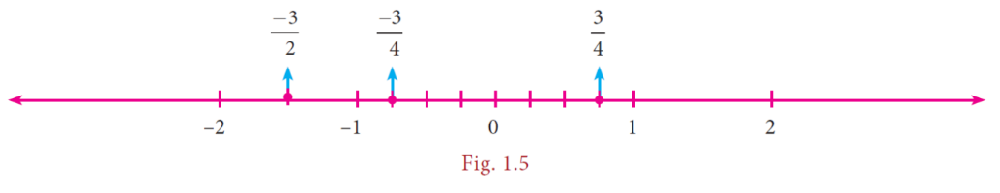
Similarly, it is easy to find minus 3 divided by 2between minus 1 and minus 2 since minus 3 divided by 2 equal to mixed fraction minus 1 into 1 divided by 2
Now, on the following number line what rational numbers do the letters A and B represent question mark
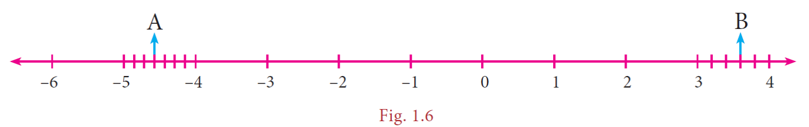
You will now be able to say easily the rational numbers marked by A and B on the number line as shown above. Isn’t it question mark Here, A represents the rational number mixed fraction minus 4 into 4 divided by 7 open bracket minus 32 divded by 7 closed bracket and B represents the rational number mixed fraction 3 into 3 divided by 5 open bracket 18 divided by 5 closed bracket.
A rational number can be nicely represented in decimal form rather than in the usual fractional form. Given a rational number in the form a divided by b open bracket b not equal to 0 closed brcket, just divide the numerator a by the denominator b and we can see that it can be expressed as a terminating or non-terminating, recurring decimal.
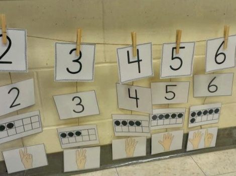
Use a string as a number line and fix it on the wall, for the length of the classroom. Just mark the integers spaciously and ask the students to pick the rational number cards from a box and fix it roughly at the right place on the number line string. This can be played between teams and the team which fixes more number of cards correctly open bracket by marking close bracket will be the winner.
Page number 4
Example 1.1
Write the decimal forms of the following rational numbers.
1. 1 divided by 4
2. mixed fraction 1 into 3 divided by 20
3. mixed fraction minus 5 into 4 divided by 5
4. 3
5. 1 divided by 3
Solution:
Open bracket small roman number one closed bracket 1 divided by 4 equal to 25 divided by 100 is equal to 0.25
Open bracket ii closed bracket mixed fracation1 into 3 divided by 20 is equal to 23 divided by 20 is equal to 115 divided by 100 is equal to 1.15
Open bracket iii close bracket mixed fraction Minus 5 into 4 divided by 5 equal to minus 29 divided by 5 equal to minus 5.8
Open bracket iv closed bracket 3 equal to 3 divided by 1 equal to 30 divided by 10 equal to 3.0
Open bracket small roman number five closed bracket 1 divided 3 equal to 0.3333… open bracket by actual division and its recurring and nonterminating closed bracket
The above examples show how a rational number may be given in decimal form. The reverse process of converting the decimal form of a rational number to the fractional form may be seen in the higher classes.
There are decimal numbers which are non-terminating and non-recurring such as
Pie equal to 3.1415926 …… etc…
square root of 2 equal to 1.414213……. etc.
They are not rational numbers and one can study more about them in the higher classes.
Write the decimal forms of the following rational numbers.
1 . 4 divided by 5
2 . 6 divided by 25
3 . 486 divided by 1000
4 . 1 divided 9
5 . mixed fraction 3 into 1 divided by 4
6. mixed fraction minus 2 into 3 divided by 5
Rational numbers may be classified as positive and negative rational numbers.
If both the numerator and the denominator of the fraction representing a rational number are of the same sign, then the rational number is positive.
For example, numbers like 3 divided by 4 , minus 11 divided by minus 6 etc., are positive rational numbers.
If either the numerator or the denominator of the fraction representing a rational number is negative, then the rational number is negative.
For example, numbers like minus 3 divided by 4, 11 divided by minus 6 , etc., are negative rational numbers.
Page number 5
We know how to write equivalent fractions when a fraction is given. Since a rational number can be represented by a fraction, we can think of equivalent rational numbers, duly obtained through equivalent fractions.
Suppose a rational number is in fractional form. Multiply its numerator and denominator by the same non-zero integer to obtain a rational number which is equivalent to it.
For example,
Minus 2 divided by 3 is equivalent to minus 6 divided by 9 since minus 2 divided by 3 equal to minus 2 multiply by 3 divided by 3 multiply 3 equal to minus 6 divided by 9
Minus 2 divided by 3 is also equivalent to 10 divided by minus 15 since 2 divided by minus 3 equal to 2 multiply by 5 divided by minus 3 multiply 5 equal to 10 divided by minus 15
Thus, minus 2 divided by 3 equal to minus 6 divided by 9 equal to 10 divided by minus 15.
1. 7 divided by 3 equal to question mark divided by 9 equal to 49 divided by question mark equal to minus 21 divided by question mark
2. minus 2 divided by 5 equal to question mark divided by 10 equal to 6 divided by question mark equal to minus 8 divided by question mark.
Observe the following rational numbers: 4 divided by 5, minus3 divided by 7,1dividedby 6,minus 4divided by13,minus 50 divided by51. Here, we see that
small roman number one close bracket The denominators of these rational numbers are all positive integers
ii close bracket 1 is the only common factor between the numerator and the denominator of each of them and
iii close bracket The negative sign occurs only in the numerator.
Such rational numbers are said to be in standard form.
A rational number is said to be in standard form, if its denominator is a positive integer and both the numerator and denominator have no common factor other than 1.
If a rational number is not in the standard form, then it can be simplified to arrive at the standard form.
The collection of rational numbers is denoted by the letter Q because it is formed by considering all quotients, expect those involving division by 0. Decimal numbers can be put in quotient form and hence they are also rational numbers.
Example 1.2
Reduce to the standard form:
Open bracket small roman number one closed bracket 48 divided by minus 84
Open bracket ii close bracket minus 18 divided by minus 42
Solution:
Open bracket I close bracket Method 1 48 divided by minus 84 is equal to 48 divided by open bracket minus 2 close bracket whole divided by minus 84 divided by open bracket minus 2 close bracket equal to minus 24 divided by 2 whole divided by 42 divided by 2 equal to minus 12 divided by 3 whole divided by 21 divided by 3 equal to minus 4 divided by 7 open bracket Dividing by minus 2 , 2 and 3 successively close bracket .
Page number 6
Method 2: The Highest Common Factor of 48 and 84 is 12 open bracket Find it exclamatory symbol close bracket. Thus, we can get its standard form by dividing it by minus12.
48 divided by minus 84 equal to 48 divided by open bracket minus 12 close bracket whole divided by minus 84 divided by open bracket minus12 close bracket equal to minus 4dvided by 7
Open bracket ii close bracket Method 1: minus 18 divided by minus 42 equal to minus 18 divided by open bracket minus 2 close bracket whole divided by minus 42 divided by open bracket minus 2 close bracket equal to 9 divided by 3 whole divided by 21 divided by 3 equal to 3 divided by7 open bracket Dividing by minus2 and 3 successively close bracket
Method 2: The Highest Common Factor of 18 and 42 is 6 open bracket Find it exclamatory symbol close bracket. Thus, we can get its standard form by dividing it by 6.
Minus 18 divided by minus 42 equal to minus 18 multiply open bracket minus 1 whole divided by minus 42 multiply open bracket minus 1 close bracket equal to 18 divided 42 equal to 18 divided by 6 whole divided by 42 divided by 6 equal to 3 divided by 7
1 Which of the following pairs represents equivalent rational numbers question mark
Open bracket small roman number one closed bracket minus 6 divided by 4 ,18 divided by minus 12
Open bracket ii closed bracket minus 4 divided by minus 20, 1 divided by minus 5
Open bracket iii closed bracket minus 12 divided by minus 17, 60 divided by 85
2 Find the standard form of:
Open bracket small roman number one closed bracket 36 divided by minus 96
Open bracket ii closed bracket minus 56 divided by minus 72
Open bracket iii closed bracket 27 divided by 18
3 Mark the following rational numbers on a number line.
Open bracket small roman number one closed bracket minus 2 divided by 3
Open bracket ii closed bracket minus 8 divided by minus 5
Open bracket iii closed bracket 5 divided by minus 4
It is useful to remember the following points:
When two integers or fractions are given, we know how to compare them and say which is greater or smaller. Now, in the same way, we can compare a pair of rational numbers.
Type 1: Comparing two rational numbers with opposite signs
Example 1.3
Compare 5 divided by 17 and minus 10 divided by 19
Page number 7
Solution:
Since every positive number is greater than every negative number,
we conclude that 5 divided by 17greater than minus 10 divided by 19
Type 2: Comparing two rational numbers represented by two fractions with same denominators
Example 1.4
Compare 1 divided by 3 and 4 divided by 3
Solution:
Since the denominators are the same, just compare the numerators.
Since 1 less than 4, we conclude that 1divided by 3 Less than 4 divided by 3
Type 3: Comparing two rational numbers represented by two fractions with different denominators
Example 1.5
Compare 3 divided by 4 And 5 divided by 6
Solution:
The Least Common Multiply of the denominators is 12 open bracket Find it exclamatory symbol closed bracket. Consider for each rational number an equivalent rational number with the Least Common Multiple 12 as denominator.
We get 3 divided by 4 equal to 9 divided by 12 and 5 divided by 6 equal to 10 divided by 12, which become like fractions now.
Here, 9 divided by 12 less than 10 divided by 12. Hence, we conclude that 3 divided by 4 less than 5 divided by 6.
Type 4: Comparing two rational numbers that are not in standard form
Example 1.6
Compare 9 divided by minus 4 and minus 2 divided by 3
Solution:
The number 9 divided by minus 4 is not in standard form. First put it in the standard form.
9 divided by minus 4 equal to 9 divided by minus 4 multiply by minus 1 divided minus 1 open bracket to get a positive denominator closed bracket equal to minus 9 divided by 4
Now, we shall compare the fractions minus 9 divided by 4 and minus 2 divided by 3 We find that these two fractions are unlike fractions. To make them as like fractions, we make use of their Least Common Multiply , which is 12. We can now compare their equivalent fractions minus 9 divided by 4 equal to minus 27 divided by 12 and minus 2 divided by 3 equal to minus 8 divided by 12 open bracket How question mark closed bracket . We find that the denominators are the same and so just comparing the numerators minus 27 and minus 8 are enough.
Page number8
Visualizing these numbers on the number line, we see that
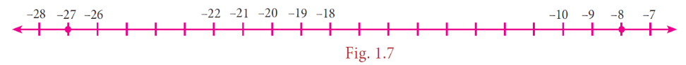
minus 8 is to the right of minus 27 and hence open bracket minus 8 closed bracket greater than open bracket minus 27closed bracket. This leads to the result that minus 8 divided by 12 greater than minus 27 divided by 12 and consequently, we conclude that minus 2 divided by 3 greater than 9 divided by minus 4.
Example 1.7
Write the following rational numbers in ascending and descending order.
minus 3 divided by 5, 7 divided by minus 10, minus 15divided by 20, 14 divided by minus30, minus 8 divided by 15
Solution: First make the denominators to be positive and write the numbers in standard form as minus 3 divided by 5, minus 7 divided by 10, minus 15 divided by 20, minus 14 divided by 30, minus 8 divided by 15.
Here, the Least Common Multiply of 5,10,15,20 and 30 is 60 open bracket Find it exclamatory symbol closed bracket . Change the given rational numbers in equivalent form with common denominator 60.
Minus 3 divided by 5 equal to minus 3 divided by 5 multiply by 12 divided by 12 equal to minus 36 divided by 60
Minus 7divided by 10 equal to minus 7 divided by 10 multiply by 6 divided by 6 equal to minus 42 divided by 60
Minus 15 divided by 20equal to minus 15 divided by 20 multiply by 3 divided by 3equal to minus 45 divided by 60
Minus 14 divided by 30 equal to minus 14 divided by 30 multiply by 2 divided by 2 equal to minus 28 divided by 60
Minus 8 divided by 15 equal to minus 8 divided by 15 multiply by 4 divided by 4equal to minus 32 divided by 60
Comparing the numerators alone, that is, minus 36, minus 42, minus 45, minus 28 and minus 32 we see that minus 45 less than minus 42 less than minus 36 less than minus 32 less than minus 28
Hence, minus 45 divided by 60 less than minus 42 divided by 60 less than minus 36 divided by 60 less than minus 32 divided by 60 less than minus 28 divided by 60 and so , minus 15 divided by 20 less than 7 divided minus 10 less than minus 3 divided by 5 less than minus 8 divided by 15 less than 14 divided by minus 30 .
So, the ascending order is minus 15 divided by 20 ,7 divided minus 10 ,minus 3 divided by 5 ,minus 8 divided by 15 and 14 divided by minus 30 .
Also, its reverse order gives the descending order as. 14 divided by minus 30, minus 8 divided by 15 , minus 3 divided by 5 , 7 divided by minus 10 and minus 15 divided by 20 .
Consider the integers 4 and 10. We can locate five integers namely 5,6,7,8 and 9 open bracket Shown in dark dots closed bracket between them. Isn’t it question mark
How many integers can you find between 3 and minus2question mark List them.
Are there any integers between minus5 and minus4question mark No, is the answer.
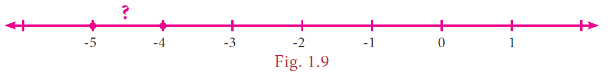
Page number 9
This shows that the choice of integers between two given integers is limited. They are finite in number or may be nothing between them. Let us think what will happen, if we consider rational numbers instead of integers question mark We will see that we can have many rational numbers between any two rational numbers. There are at least two methods to find more rational numbers between any two rational numbers.
We know that that the average of any two numbers always lies at the middle of them.
For example, the average of 2 and 8 is 2 plus 8 whole divided by 2 equal to 5 and this 5 lies at the middle of 2 and 8 as shown in the following number line.
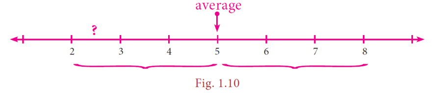
We use this idea to find more rational numbers between any two rational numbers.
Example 1.8
Find a rational number between 1 divided by 3 and 5 divided by 9.
Solution: the average of 1 divided by 3 and 5 divided by 9 equal to 1 divided by 2 open bracket 1 divided by 3 plus 5 divided by 9 closed bracket equal to 1 divided by 2 open bracket 1 divided by 3 multiply by 3 divided by 3 plus 5 divided by 9 close bracket open bracket why question mark close bracket
Equal to 1 divided by 2 open bracket 3 divided by 9 plus 5 divided by 9 close bracket equal to 1 divided by 2 multiply by 8 divided by 9 equal to 4 divided by 9
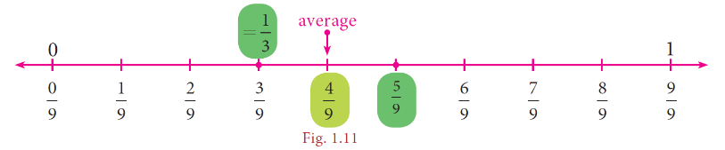
Note that 4 divided by 9 is one rational number we have found in between 1 divided by 3 and 5 divided by 9 and we can find many such numbers in between 1 divided by 3 and 5 divided by 9 . This shows that between any two rational numbers there lie an unlimited number of rational numbers exclamatory symbol Mathematically, we say that there lie an infinite number of rational numbers between any two rational numbers.
Are there any rational numbers between minus 7 divided by 11 and 6 divided by minus 11 question mark
We can use the idea of equivalent fractions to get more rational numbers between any two rational numbers. This is clearly explained in the following illustration.
Page number 10
Illustration:
Let us now try to find more rational numbers say between 3 divided by 7 and 4 divided by 7 by the following visual explanation on the number line. If we get the multiples of the denominator of the equivalent rational numbers open bracket the easy one will be to multiply by 10 close bracket , then we can insert as many rational numbers as we want. We shall write 3 divided by 7 as 30 divided by 70 and 4 divided by 7 as 40 divided by 70 and see that there are 9 rational numbers between 3 divided by 7 and 4 divided by 7 as given in the number line below.
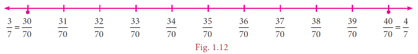
Now, if we want more rational numbers between say 37 divided by 70 and 38 divided by 70 we can write
37 divided by 70 as 370 divided by 700 and 38 divided by 70 as 380 divided by 700 . then again we will get nine rational numbers between 37 divided by 70 and 38 divided by 70 as 371 divided by 700,
372 divided by 700 ,373 divided by 700,374 divided by 700,375 divided by 700,376 divided by 700,377 divided by 700,378 divided by 700 and 379 divided by 700
The following diagram helps us to understand this nicely with a magnifying lens used between 0 and 1 and further zoomed into the fractional parts also.
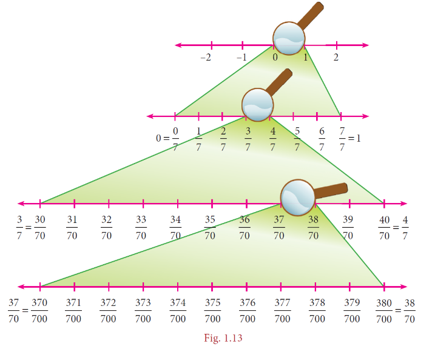
Thus, we can see that there are an unlimited number of rational numbers between any two given rational numbers.
Page number 11
Example 1.9
Find at least two rational numbers between minus 3 divided by 4and minus 2 divided by 5
Solution:
The denominators are different for the given rational numbers. The Least Common Multiple of the denominators 4 and 5 is 20. Make the rational numbers such that they have common denominators as 20. Here,
Minus 3 divided by 4 equal to minus 3 divided by 4 multiply 5 divided by 5 equal to minus 15 divided by 20 and minus 2 divided by 5 equal to minus 2 divided by 5 multiply 4 divided by 4 equal to minus 8 divided by 20
it is easy now to find and insert rational numbers between minus 15 divided by 20 and minus 8 divided by 20 as shown below.
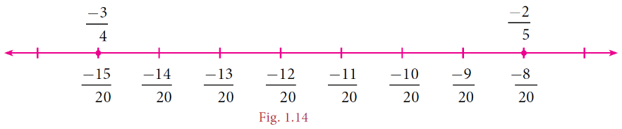
We can list a few rational numbers as minus 14 divided by 20, minus 13 divided by 20 , minus 12 divided by 20 , minus 11 divided by 20, minus 10 divided by 20, and minus 9 divided by 20 between minus 15 divided by 20 and minus 8 divided by 20 .
Are these the only rational numbers between minus 15 divided by 20 and minus 8 divided by 20 question mark Think exclamatory symbol Try to find 10 more rational numbers between them, if possible exclamatory symbol
We can find many rational numbers between minus 7 divided by 11 and 5 divided by minus 9 quickly as given below. The range of rational numbers can be got by the cross multiplication of denominators with the numerators after writing the given fractions in standard form. The cross multiplication of minus 7 divided by 11 minus 5 divided by 9 open bracket 9 multiply minus 7 plus 11 multiply minus 5 the whole divided by 11 multiply 9 closed bracket gives the range of rational numbers from minus63 to minus55 with the denominator 99. This is nothing but making the given rational numbers equivalent with the denominator 99 exclamatory symbol
1 Fill in the blanks:
Open bracket small roman number one close bracket Minus 19 divided by 5 lies between the integers dash and dash
Open bracket ii close bracket The decimal form of the rational number 15 divided by minus 4 is dash
Open bracket iii close bracket The rational numbers minus 8 divided by 3 and 8 divided by are equidistant from dash
Open bracket iv close bracket The next rational number in the sequence minus 15 divided by 24 , 20 divided by minus 32 , minus 25 divided by 40 is dash
Open bracket small roman number five close bracket The standard form of 58 divided by minus 78 is dash
page number 12
2. Say True or False:
Open bracket small roman number one close bracket 0 is the smallest rational number.
Open bracket ii close bracket minus 4 divided by 5 lies to the left of minus 3 divided by 4.
Open bracket iii close bracket minus 19 divided by 5 is greater than 15 divided by minus 4
Open bracket iv close bracket The average of two rational numbers lies between them.
Open bracket small roman number five close bracket There are an unlimited number of rational numbers between 10 and 11.
3. Find the rational numbers represented by each of the question marks marked on the following number lines.
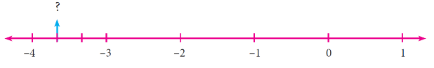
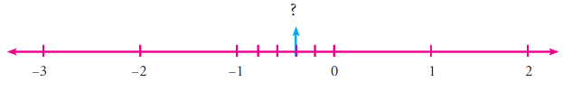
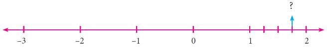
4. The points S, Y, N, C, R, A, T, I and O on the number line are such that CN equal to NY equal to YS and RA equal to AT equal to TI equal to IO. Find the rational numbers represented by the letters Y, N, A, T and I.
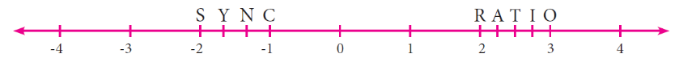
5. Draw a number line and represent the following rational numbers on it.
Open bracket I close bracket 9 divided by 4
open bracket ii close bracket minus 8 divided by 3
open bracket iii close bracket minus 17 divided by minus 5
open bracket iv close bracket 15 divided by minus 4
6. Write the decimal form of the following rational numbers.
open bracket small roman number one close bracket 1 divided by 11
open bracket ii close bracket 13 divided by 4
open bracket iii close bracket minus 18 divided by 7
open bracket iv close bracket mixed fraction 1 into 2 divided by 5
open bracket small roman number five close bracket mixed fraction minus 3 into 1 divided by 2
7. List any five rational numbers between the given rational numbers.
Open bracket I close bracket minus 2 and 0
open bracket ii close bracket minus 1 divided by 2 and 3 divided by 5
open bracket iii close bracket 1 divided by 4 and 7 divided by 20
open bracket iv close bracket minus 6 divided by 4 and minus 23 divided by 10
8. Use the method of averages to write 2 rational numbers between 14 divided by 5 and 16 divided by 3
9. Compare the following pairs of rational numbers.
open bracket I close bracket minus 11 divided by 5 , minus 21 divided by 8
open bracket ii close bracket 3 divided minus 4 , minus1 divided by 2
open bracket iii close bracket 2 divided by 3 , 4 divided by 5
10. Arrange the following rational numbers in ascending and descending order.
Open bracket I close bracket minus 5 divided by 12 , minus 11 divided by 8, minus 15 divided by 24, minus 7 divided by minus 9, 12 divided by 36 .
open bracket ii close bracket minus 17 divided by 10 , minus 7 divided by 5 , 0 , minus 2 divided by 4 , minus 19 divided by 20
page number 13
Objective Type Questions
11. The number which is subtracted from minus 6 divided by 11 to get 8 divided by 9 is dash
Open bracket A close bracket 34 divided by 99
open bracket B close bracket minus 142 divided by 99
open bracket C close bracket 142 divided by 99
open bracket D close bracket minus 34 divided by 99
12. Which of the following pairs is equivalent question mark
Open bracket A closed bracket minus 20 divided by 12 , 5 divided by 3
open bracket B close bracket 16 divided by minus 30 , minus 8 divided by 15
open bracket C close bracket minus 18 divided by 36 ,minus 20 divided by 44
open bracket D close bracket 7 divided by minus 5 , minus 5 divided by 7
13. minus 5 divided by 4 is a rational number which lies between dash
Open bracket A close bracket 0 and minus 5 divided by 4
open bracket B close bracket -1 and 0
open bracket C close bracket -1 and -2
open bracket D close bracket -4 and -5
14. Which of the following rational numbers is the greatest question mark
open bracket A close bracket minus 17 divided by 24
open bracket B close bracket minus 13 divided by 16
open bracket C close bracket 7 divided by minus 8
open bracket D close bracket minus 31 divided by 32
15. The sum of the digits of the denominator in the simplest form of 112 divided by 528 is dash
Open bracket A close bracket 4
open bracket B close bracket 5
open bracket C close bracket 6
open bracket D close bracket 7
All the rules and principles that govern fractions in the basic operations apply to rational numbers also.
There can be four different situations while doing addition.
Type 1: Adding numbers that have same denominators
This is simply like adding like fractions and the result is the sum of the numerators divided by their common denominator.
Example 1.10
Add: minus 6 divided 11 , 8 divided 11 , minus 12 divided by 11 .
Solution:
Write the given rational numbers in the standard form and then add them.
So, minus 6 divided by 11 plus 8 divided by 11 plus minus 12 divided by 11 equal to minus 6 plus 8 minus 12 whole divided by 11 equal to minus 10 divided by 11
Type 2: Adding numbers that have different denominators
After writing the given rational numbers in the standard form, use the least common multiply of their denominators to convert the numbers into equivalent rational numbers with a common denominator so that this reduces to Type 1.
Page number 14
Example 1.11
Add: minus 5 divided by 9 , minus 4 divided by 3, 7 divided by 12
Solution:
Least Common Multiple of 9, 3, 12 is equal to 36
So, minus 5 divided by 9 plus minus 4 divided by 3 plus 6 divided by 12 equal to minus 5 divided by 9 multiply 4 divided by 4 plus minus 4 divided by 3 multiply 12 divided by 12 plus 7 divided by 12 multiply 3 divided by 3
Equal to minus 20 divided by 36 plus minus 48 divided by 36 plus 21 divided by 36
Equal to minus 20 minus 48 plus 21 whole divided by 36 equal to minus 47 divided by 36
The additive inverse of a rational number is another rational number which when added to the given number, gives zero. For example, 4 divided by 3 and minus 4 divided by 3 are additive inverses of each other, since their sum is zero.
Is zero a rational number question mark If so, what is its additive inverse question mark
Subtraction is simply adding the additive inverse.
Example 1.12
Subtract: 9 divided by 17 from minus 12 divided by 17
Solution:
Now, minus 12 divided by 17 minus 9 divided by 17 equal to minus 12 divided by 17 plus open bracket minus 9 divided by 17 close bracket equal to minus 12 minus 9 whole divided by 17 equal to minus 21 divided by 17
Example 1.13
Subtract: open bracket mixed fraction minus 2 into 6 divided by 11 close bracket from open bracket mixed fraction minus 4 into 5 divided by 22 close bracket
Solution:
Now, open bracket mixed fraction minus 4 into 5 divided by 22 close bracket minus open bracket mixed fraction minus 2 into 6 divided by 11 close bracket
equal to minus 93 divided by 22 minus open bracket minus 28 divided by 11 close bracket
equal to minus 93 divided by 22 plus 28 divided by 11 equal to minus 93 plus 28 multiply 2 whole divided by 22
equal to minus 93 plus 56 whole divided by 22 equal to minus 37 divided by 22 equal to mixed fraction minus 1 into 15 divided by 22
Product of two or more rational numbers is found by multiplying the corresponding numerators and denominators of the numbers and then writing them in the standard form.
Page number 15
Example 1.14
Evaluate:
open bracket small roman number one close bracket minus 5 divided by 8 multiply 7 divided by 3
open bracket ii close bracket minus 6 divided by minus 11 multiplied by open bracket minus 4 close bracket
Solution
Open bracket small roman number one close bracket minus 5 divided by 8 multiply 7 divided by 3 equal to minus 5 multiply 7 whole divided by 8 multiply 3 equal to minus 35 divided by 24
Open bracket ii close bracket minus 6 divided by minus 11 multiply open bracket minus 4 close bracket equal to 6 divided by 11 multiply open bracket minus 4 close bracket divided by 1 equal to 6 multiply open bracket minus 4 close bracket whole divided by 11 multiply 1 equal to minus 24 divided by 11
If the product of two rational numbers is 1, then each of them is said to be the reciprocal or the multiplicative inverse of the other.
What is the multiplicative inverse of 1 and minus 1 question mark
For the rational number a, its reciprocal is 1 divided by a and vice versa since a multiply 1 divided by a equal to 1 divided by a multiply a equal to 1
For the rational number a divided by b , its multiplicative inverse is b divided by a and vice versa since
a divided by b multiply b divided by a equal to b divided by a multiply a divided by b equal to 1
The idea of reciprocals of fractions is extended to the division of rational numbers also. To divide a given rational number by another rational number, we have to multiply the given rational number by the reciprocal of the second rational number. That is, division is simply multiplying by the multiplicative inverse of the divisor.
Example 1.15
Divide 7 divided by minus 8 by minus 3 divided by 4
Solution:
Here, 7 divided by minus 8 divided by minus 3 divided by 4 equal to minus 7 divided by 8 multiply minus 4 divided by 3 equal to 7 divided by 6
Divide:
Open bracket small roman number one close bracket minus 7 divided by 3 by 5
Open bracket small roman number two close bracket 5 by minus 7 divided by 3
Open bracket iii close bracket minus 7 divided by 3 by 35 divided by 6
For any non-zero b, c, and d, we have
open bracket small roman number one close bracket open bracket a divided by b close bracket divided by c equal to a divided by bc
open bracket ii close bracket a divided by open bracket b divided by c close bracket equal to ac whole divided by b
open bracket iii close bracket open bracket a divided by b close bracket divided by open bracket c divided by d close bracket equal to ad divided by bc
Example 1.16
The sum of two rational numbers is 4 divided by 5. If one number is 2 divided by 15 ,then find the other.
Solution:
Let the other number be x.
Given, 2 divided by 15 plus x equal to 4 divided by 5
Which implies x equal to 4 divided by 5 minus 2 divided by 15 equal to 12 minus 2 whole divided by 15 equal to 10 divided by 15 which implies x equal to 2 divided by 3
Page number 16
Example 1.17
The product of two rational numbers is minus 2 divided by 3 . If one number is 3 divided by 7, then find the other.
Solution:
Let the other number be x.
Given , 3 divided by 7 multiply x equal to minus 2 divided by 3
Multiplying by the reciprocal of 3 divided by 7 , that is 7 divided by 3 on both sides
Which implies 7 divided by 3 multiply 3 divided by 7 multiply x equal to 7 divided by 3 multiply minus 2 divided by 3
Which implies x equal to minus 14 divided by 9
Example 1.18
One roll of ribbon is mixed fraction 18 into3 divided by 4 metre long. Sankari has four full rolls and one third of another roll. How many metres of ribbon does Sankari have in total question mark
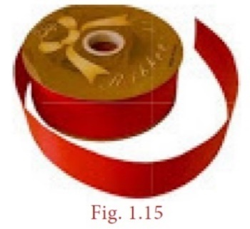
Number of metres of ribbon Sankari has in total
equal to mixed fraction 18 into 3 divided by 4 multiply mixed fraction 4 into 1 divided by 3 equal to 75 divided by 4 multiply 13 divided by 3 equal to 325 divided by 4 equal to mixed fraction 81 into 1 divided by 4 metre
Example 1.19
Find the rational numbers that should be added and subtracted so that they will make the sum mixed fraction 3 into 1 divided by 2 plus mixed fraction 1 into 3 divided by 4 plus mixed fraction 2 into 3 divided by 8 to the nearest whole number.
Solution:
Now, mixed fraction 3 into 1 divided by 2 plus mixed fraction 1 into 3 divided by 4 plus mixed fraction 2 into 3 divided by 8
equal to 7 divided by 2 plus 7 divided by 4 plus 19 divided by 8 equal to 7 multiply 4 plus 7 multiply 2 plus 19 multiply 1 whole divided by 8 equal to 28 plus 14 plus 19 whole divided by 8
equal to 61 divided by 8 equal to,mixed fraction 7 into 5 divided by 8 , Which lies between the whole numbers 7 and 8.
If we subtract 5 divided by 8 from , mixed fraction 7 into 5 divided by 8 , it becomes 7. If we add 3 divided by 8
to mixed fraction 7 into 5 divided by 8,it becomes 7 plus 5 divided by 8 plus 3 divided by 8 equal to 7 plus 1 equal to 8.
Example 1.20
A student instead of multiplying a number by 8 divided by 9 , by mistake divided it by 8 divided by 9. If the difference between the correct answer and the answer got by him is 34, then find the number.
Page number 17
Solution:
Let the number be x.
The student had to find 8x whole divided by 9 but, he had found x divided by open bracket 8 divided by 9 close bracket, that is 9x whole divided by 8.
Now, 9x whole divided by 8 minus 8x whole divided by 9 equal to 34 open bracket given close bracket
81 x minus 64 x whole divided by 72 equal to 34 which implies 17x whole divided by 72 equal to 34
X equal to 34 multiply 72 whole divided by 17 equal to 144
Example 1.21
Simplify: open bracket 4 divided by 3 minus open bracket minus 3 divided by 2close bracket close bracket plus open bracket minus 5 divided by 3 divided by 30 divided by 12 close bracket plus open bracket minus 12 divided by 9 multiply minus 27 divided by 16 close bracket
Solution:
Here, open bracket 4 divided by 3 minus open bracket minus3 divided by 2 close bracket close bracket plus open bracket minus 5 divided by 3 divided by 30 divided by 12 close bracket plus open bracket minus 12 divided by 9 multiply minus 27 divided by 16 close bracket equal to open bracket 4 divided by 3 plus 3 divided by 2 close bracket plus open bracket minus 5 divided by 3 multiply 12 divided by 30 close bracket plus open bracket minus 12 divided by 9 multiply minus 27 divided by 16 close bracket
equal to open bracket 8 divided by 6 plus 9 divided by 6 close bracket plus open bracket minus 1 divided by 1 multiply 4 divided by 6 close bracket plus open bracket minus 3 divided by 1 multiply minus 3 divided by 4 close bracket
equal to open bracket 17 divided by 6 close bracket plus open bracket minus 4 divided by 6 close bracket plus open bracket 9 divided by 4 close bracket
equal to open bracket 17 minus 4 whole divided by 6 close bracket plus 9 divided by 4 equal to 13 divided by 6 plus 9 divided by 4
equal to 26 plus 27 whole divided by 12 equal to 53 divided by 12
Exercise 1.2
1 Fill in the blanks:
Open bracket I close bracket The value of minus 5 divided by 12 plus 7 divided by 15 equal to dash
Open bracket ii close bracket The value of open bracket minus 3 divided by 6 multiply open bracket 18 divided by minus 9 is dash
Open bracket iii close bracket open bracket minus 15 divided by 23 divided by 30 divided by minus 46 close bracket is dash
Open bracket iv close bracket The rational number dash does not have a reciprocal.
Open bracket v close bracket The multiplicative inverse of minus 1 is dash
2 Say True or False:
Open bracket i close bracket All rational numbers have an additive inverse.
Open bracket ii close bracket The rational numbers that are equal to their additive inverses are 0 and minus1.
Open bracket iii close bracket The additive inverse of , minus 11 divided by minus 17 is 11 divided by 17
Page number 18
Open bracket iv close bracket The rational number which is its own reciprocal is minus1.
Open bracket v close bracket The multiplicative inverse exists for all rational numbers.
3 Find the sum:
open bracket I close bracket 7 divided by 5 plus 3 divided by 5
open bracket ii close bracket 7 divided by 5 plus 5 divided by 7
open bracket iii close bracket 6 divided by 5 plus open bracket minus 14 divided by 15 close bracket
open bracket iv close bracket mixed fraction minus 4 into 2 divided by 3 plus mixed fraction 7 into 5 divided by12
4 Subtract: minus 8 divided by 44 from minus 17 divided by 11
5 Evaluate:
Open bracket I close bracket 9 divided by 132 multiply minus 11 divided by 3
open bracket ii close bracket minus 7 divided by 27 multiply 24 divided by minus 35.
6 Divide:
open bracket i close bracket minus 21 divided by 5 minus 7 divided by minus 10
open bracket ii close bracket minus 3 divided by 13 by minus 3
open bracket iii close bracket minus 2 by minus 6 divided by 15
7 Find open bracket a +b close bracket divided by open bracket a minus b close bracket if
open bracket i close bracket a equal to 1 divide by 2 , b equal to 2 divided by 3
open bracket ii close bracket a equal to minus 3 divided by 5 , b equal to 2 divided by 15
8 Simplify: 1 divided by 2 plus open bracket 3 divided by 2 minus 2 divided by 5 close bracket divided by 3 divided by 10 multiply 3 and show that it is a rational number between 11 and 12.
9 Simplify:
open bracket one close bracket 11 divided by 8 multiplied by open bracket minus 6 divided by 33 close bracket plus open bracket 1 divided by 3 plus open bracket 3 divided by 5 divided by 9 divided by 20 close bracket close bracket minus open bracket 4 divided by 7 multiply minus 7 divided by 5 close bracket
open bracket ii close bracket open bracket 4 divided by 3 divided by open bracket 8 divided by minus 7 close bracket close bracket minus open bracket 3 divided by 4 multiply 4 divided by 3 close bracket plus open bracket 4 divided by 3 multiply minus1 divided by 4 close bracket close bracket
10 A student had multiplied a number by 4 divided by 3 instead of dividing it by 4 divided by 3 and got 70 more than the correct answer. Find the number.
Objective Type Questions
11 The standard form of the sum 3 divided by 4 plus 5 divided by 6 plus open bracket minus 7 divided by 12 close bracket is dash
open bracket A close bracket 1
open bracket B close bracket minus 1 divided by 2
open bracket C close bracket 1 divided by 12
open bracket D close bracket 1 divided by 22
12 Open bracket 3 divided by 4 minus 5 divided by 8 close bracket plus 1 divided by 2 equal to dash
Open bracket A close bracket 15 divided by 64
open bracket B close bracket 1
open bracket C close bracket 5 divided by 8
open bracket D close bracket 1 divided by 16
13 3 divided by 4 divided by open bracket 5 divided by 8 plus 1 divided by 2 close bracket equal to dash
open bracket A close bracket 13 divided by 10
open bracket B close bracket 2 divided by3
open bracket C close bracket 3 divided by 2
open bracket D close bracket 5 divided by 8
14 3 divided by 4 multiply open bracket 5 divided by 8 divided by 1 divided by 2 close bracket equal
To dash
open bracket A close bracket 5 divided by 8
open bracket B close bracket 2 divided by 3
open bracket C close bracket 15 divided by 32
open bracket D close bracket 15 divided by 16
page number 19
15 Which of these rational numbers which have additive inverse question mark
open bracket A close bracket 7
open bracket B close bracket minus 5 divided by 7
open bracket C close bracket 0
open bracket D close bracket all of these
Why a divided by b plus c divided by d is not equal to a plus c whole divided by b plus d question mark
A mathematical statement is true only if it is 100% true without any exception. If we do addition say 3 divided by 4 plus 1 divided by 4 as 3 plus 1 whole divided by 4 plus 4 equal to 4 divided by 8 equal to 1 divided by 2. This is wrong, since 3 divided by 4 plus 1 divided by 4 equal to 3 plus 1 whole divided by 4 equal to 4 divided by 4 equal to 1.
Some properties listed here below will be of good use in solving problems.
Open bracket i close bracket Closure property for Addition
For any two rational numbers a and b, the sum a + b is also a rational number.
Open bracket ii close bracket Closure property for Multiplication
For any two rational numbers a and b, the product ab is also a rational number.
Illustration
Take a equal to 3 divided by 4 and b equal to minus 1 divided by 2
Now, a plus equal to 3 divided by 4 plus minus 1 divided by 2 equal to 3 divided by4 plus minus 2 divided by 4 equal to 3 minus 2 whole divided by 4 equal to 1 divided by 4 is in Q
Also, a multiplied by b equal to 3 divided by 4 multiply minus 1 divided by 2 equal to minus 3 divided by 8 is in Q
The closure property on integers holds for subtraction and not for division. What about rational numbers question mark Verify.
Open bracket small roman number one close bracket Commutative property for Addition
For any two rational numbers a and b, a + b equal to b + a.
Open bracket small roman number two close bracket Commutative property for Multiplication
For any two rational numbers a and b, a b equal to b a open bracket a b means a multiply b and b a means b multiply a close bracket .
Illustration
Take
a equal to minus 7 divided by 8 and b equal to 3 divided by 5
now a plus b equal to minus 7 divided by 8 plus 3 divided by 5 equal to minus 7 multiply 5 plus 3 multiply 8 whole divided by 40 equal to minus 35 plus 24 whole divided by 40 equal to minus 11 divided by 40
also ,b plus a equal to 3 divided by 5 plus minus 7 divided by 8 equal to 3 multiply 8 plus minus 7 multiply 5 whole divided by 40 equal to 24 minus 35 whole divided by 40 equal to minus 11 divided by 40
here , we find that a plus b equal to b plus a and hence, addition is commutative.
Page number 20
Fill in the blanks in the table given below of properties of Integers.
open bracket If a, b, c are integers, then minus a, minus b, minus c are also integers close bracket
Operations |
Closure |
Commutative |
Associative |
Identity |
Inverse |
Distributive |
Addition |
a plus b is in Z example 5 plus open bracket minus 3 close bracket equal to 2 Which implies 2 is in Z |
a plus b is equal to b plus a example 5 plus open bracket minus 3 close bracket equal to open bracket minus 3 close bracket plus 5 Which implies 2 equal to 2 |
open bracket a plus b close bracket plus c equal to a plus open bracket b plus c close bracket example open bracket 2 plus 3 close bracket plus open bracket minus 4 close bracket equal to 1 2 plus open bracket 3 plus open bracket minus 4 close bracket close bracket equal to 1 |
a plus 0 equal to 0 plus a equal to a example open bracket minus 4 close bracket plus 0 equal to 0 plus open bracket minus 4 close bracket equal to minus 4 |
a plus open bracket minus a close bracket equal to open bracket minus a close bracket plus a equal to 0 example 5 plus open bracket minus 5 close bracket equal to open bracket minus 5 close bracket plus 5 equal to 0 |
a multiply open bracket b plus c close bracket equal to open bracket a multiply b close bracket plus open bracket a multiply c close bracket example 2 multiply open bracket 3 plus open bracket minus 5 close bracket close bracket equal to minus 4 open bracket2 multiply 3 close bracket plus open bracket 2 multiply open bracket minus 5 close bracket close bracket equal to minus 4 |
Multiplication |
a b is in Z Example dash |
a multiply b equal to b multiply a example dash |
open bracket a multiply b close bracket multiply c equal to a multiply open bracket b multiply c close bracket example open bracket 2 multiply 3 close bracket multiply open bracket minus 6 close bracket equal to minus 36 2 multiply open bracket 3 multiply open bracket minus 6 close bracket close bracket equal to minus 36 |
a multiply 1 equal to 1 multiply a equal to a example dash |
Does not exist |
Not applicable |
Subtraction |
A minus b is in Z Example dash |
Fails a minus b not equal to b minus a example dash |
Fails open bracket a minus b close bracket minus c not equal to a minus open bracket b minus a close bracket Example dash |
Fails a minus 0 not equal to 0 minus a example 5 minus 0 equal to 5 0minus 5 equal to minus 5 5 is not equal to minus 5 |
Fails a minus open bracket minus a close bracket is not equal to open bracket minus a close bracket minus a Example 2 minus open bracket minus 2 close bracket equal to 4 open bracket minus 2 close bracket minus 2equal to minus 4 4 is not equal to minus 4 |
a multiply open bracket b minus c close bracket equal to open bracket a multiply b close bracket minus open bracket a multiply c close bracket Example dash |
Division |
Fails a divided b is not in Z example 3 divided by 5 equal to 3 divided by 5 does not belong to Z |
Fails |
Fails |
Fails |
Fails |
Not applicable |
Page number 21
Further , a multiple b equal to minus 7 divided by 8 multiply 3 divided by 5 equal to minus 7 multiply 3 whole divided by 8 multiply 5 equal to minus 21 divided by 40
Also, b multiply a equal to 3 divided by 5 multiply minus 7 divided by 8 equal to 3 divided by minus 7 whole divided by 5 multiply by 8 equal to minus 21 divided by 40
Here, we find that a multiply b equal to b multiply a and hence multiplication is commutative.
open bracket small roman number one close bracket Is 3 divided by 5 minus 7 divided by 8 equal to 7 divided by 8 minus 3 divided by 5 question mark
open bracket ii close bracket Is 3 divided by 5 divided by 7 divided by 8 equal to 7 divided by 8 divided by 5 divided by 3 question mark so, what do you conclude question mark
Open bracket small roman number one close bracket Associative property for Addition
for any three rational numbers a, b, and c,
a plus open bracket b plus c close bracket equal to open bracket a plus b
close bracket plus c
open bracket ii close bracket Associative property for Multiplication
for any three rational numbers a, b and c,
a open bracket b c close bracket equal to open bracket a b close bracket c
Illustration
Take rational numbers a, b, c as a equal to minus 1 divided by 2 , b equal to 3 divided by 5 and c equal to minus 7 divided by 10
Now, a plus b equal to minus 1 divided by 2 plus 3 divided by 5 equal to minus 5 divided by 10 plus 6 divided by 10 open bracket equivalent rationals with common denominators close bracket
a plus b equal to minus 5 plus 6 whole divided by 10 equal to 1 divided by 10
open bracket a plus b close bracket plus c equal to 1 divided by 10 plus open bracket minus 7 divided by 10 equal to minus 6 divided by 10 equal to minus 3 divided by 5 Now … open bracket 1 close bracket
Also, b plus c equal to 3 divide by 5 plus minus 7 divided by 10 equal to 6 divided by 10 plus minus 7 divided by 10 equal to 6 minus 7 whole divided by 10 equal to minus 1 divided by 10
a plus open bracket b plus c close bracket equal to minus 1 divided by 2 plus minus 1 divided by 10 equal to minus 5 divided by 10 plus minus 1 divided by 10 equal to minus 5 minus 1 whole divided by 10 equal to minus 6 divided by 10 equal to minus 3 divided by 5 … open bracket 2 close bracket
open bracket 1 close bracket and open bracket 2 close bracket shows that open bracket a plus b close bracket plus c equal to a plus open bracket b plus c close bracket is true for rational numbers.
Similarly, a multiply b equal to minus 1 divided by 2 multiply 3 divided by 5 equal to minus 1 multiply 3 whole divided by2 multiply 5 equal to minus 3 divided by 10
Open bracket a multiply b close bracket multiply c equal to minus 3 divided by 10 multiply minus 7 divided by 10 equal to minus 3 multiply minus 7 whole divided by 10 multiply 10 equal to 21 divided by 100 …… open bracket 3 close bracket
Also, b multiply c equal to 3 divided by 5 multiply minus 7 divided by 10 equal to 3 multiply minus 7 whole divided by5 multiply 10 equal to minus 21 divided by 50
a multiply open bracket b multiply c close bracket equal to minus 1 divided by 2 multiply minus 21 divided by 50 equal to minus 1 multiply minus 21 whole divided by 2 multiply 50 equal to 21 divided by 100 ……. open bracket 4 close bracket
open bracket 3 close bracket and open bracket 4 close bracket shows that
open bracket a multiply by b close bracket multiply by c equal to a multiply by open bracket b multiply by c close bracket is true for rational numbers. Thus, the associative property is true for addition and multiplication of rational numbers.
Check whether associative property holds for subtraction and division.
Page number 22
One close bracket Identity property for Addition
For any rational number a, there exists a unique rational number 0 such that 0 plus a equal to a equal to 0 plus a
ii close bracket Identity property for multiplication
For any rational number a, there exists a unique rational number 1 such that 1 multiply a equal to a equal to a multiply 1 .
Illustration
Take a equal to 3 divided by minus 7that is , a equal to minus 3 divided by 7. Now minus 3 divided by 7 plus 0 equal to minus 3 divided by 7 equal to 0 plus minus 3 divided by 7 open bracket Isn’t it question mark close bracket
Hence, 0 is the additive identity for minus 3 divided by 7
Also, minus 3 divided by 7 multiply 1 equal to minus 3 divided by 7 equal to 1 multiply minus 3 divided by 7 open bracket Isn’t it question mark close bracket
Hence, 1 is the multiplicative identity for minus 3 divided by 7
one close bracket Additive Inverse property
For any rational number a, there exists a unique rational number minus a such that a plus open bracket minus a close bracket equal to open bracket minus a close bracket plus a equal to 0. Here, 0 is the additive identity.
two close bracket Multiplicative inverse property
For any rational number b, there exists a unique rational number 1 divided by b such that b multiply 1 divided by b equal to 1 divided by b multiply b equal to 1. Here, 1 is the multiplicative identity.
Illustration
Take a equal to minus 11 divided by 23 Now, minus a equal to minus of open bracket minus 11 divided by 23 close bracket equal to 11 divided by 23
So, a plus open bracket minus a close bracket equal to minus 11 divided by 23 plus 11 divided by 23 equal to minus 11 plus 11 whole divided by 23 equal to 0 divided by 23 equal to 0
Also, open bracket minus a close bracket plus open bracket a close bracket equal to 11 divided by 23 plus minus 11 divided by 23 equal to 11 minus 11 whole divided by 23 equal to 0 divided by 23 equal to 0 there fore, a plus open bracket minus a close bracket equal to open bracket minus a close bracket plus a equal to 0 is true.
Also, take b equal to minus 17 divided by 29. Now, 1 divided by b equal to 29 divided by minus 17 equal to minus 29 divided by 17
b multiply 1 divided by b equal to minus 17 divided by 29 multiply minus 29 divided by 17 equal to 1. Also , 1 divided by b multiply b equal to minus 29 divided by 17 multiply minus 17 divided by 29 equal to 1
therefore b multiply 1 divided by b equal to 1 divided by b multiply b equal to 1 is true .
page number 23
Multiplication is distributive over addition for the collection of rational numbers.
For any three rational numbers a, b and c, the distributive law is a multiply open bracket b plus c close bracket equal to open bracket a multiply b close bracket plus open bracket a multiply c close bracket .
Illustration
Take rational numbers a, b, c as a equal to minus 7 divided by 9, b equal to 11 divided by 18 and c equal to minus 14 divided by 27
Now, b plus c equal to b plus c equal to 11 divided by 18 plus minus 14 divided by 27 equal to 33 divided by 54 plus minus 28 divided by 54 equal to 33 minus 28 whole divided by 54 equal to 5 divided by 54
open bracket Equivalent rationals with common denominators close bracket
therefore , a multiply open bracket b plus c close bracket equal to minus 7 divided by 9 multiply 5 divided by 54 equal to minus 7 multiply 5 whole divided by 9 multiply 54 equal to minus 35 divided by 486 statement 1
Also, a multiply b equal to minus 7 divided by 9 multiply 11 divided by 18 equal to minus 7 multiply 11 whole divided by 9 multiply 18 equal to minus 77 divided by 9 multiply 9 multiply 2
a multiply c equal to minus 7 divided by 9 multiply minus 14 divided by 27 equal to 7 multiply 14 whole divided by 9 multiply 9 multiply 3 equal to 98 divided by 9 multiply 9 multiply 3
there fore open bracket a multiply close bracket plus open bracket a multiply c close bracket equal to minus 77 divided by 9 multiply 9 multiply 2 plus 98 divided by 9 multiply 9 multiply 3
equal to minus 77 multiply 3plus 98 multiply 2 whole divided by 9 multiply 9 multiply 2 multiply 3 equal to minus 231 plus 196 whole divided by 486 equal to minus 35 divided by 486 statement 2
statement 1 and statement 2 shows that a multiply open bracket b plus c close bracket equal to open bracket a multiply b close bracket plus open bracket a multiply c close bracket .Hence, multiplication is distributive over addition for the collection Q of rational numbers.
Exercise 1.3
1 Verify the closure property for addition and multiplication for the rational number minus 5 divided by 7 and 8 divided by 9.
2 Verify the commutative property for addition and multiplication for the rational number minus 10 divided by 11 and minus 8 divided by 33.
3 Verify the associative property for addition and multiplication for the rational numbers minus 7 divided by 9 , 5 divided by 6 and minus 4 divided by 3.
4 Verify the distributive property a multiply open bracket b plus c close bracket equal to open bracket a multiply b close bracket plus open bracket a plus c close bracket for the rational numbers a equal to minus 1 divided by 2, b equal to 2 divided by 3 and c equal to minus 5 divided by 6.
5 Verify the identity property for addition and multiplication for the rational numbers 15 divided by 19 and minus 18 divided by 25
Page number 24
6 Verify the additive and multiplicative inverse property for the rational numbers minus 7 divided by 17 and 17 divided by 27.
Objective Type Questions
7 Closure property is not true for division of rational numbers because of the number
Open bracket A close bracket 1
open bracket B close bracket minus 1
open bracket C close bracket 0
open bracket D close bracket 1 divided by 2
8 1 divided by 2 minus open bracket 3 divided by 4 minus 5 divided by6 close bracket is not equal to open bracket 1 divided by 2 minus 3 divided by 4 close bracket minus 5 divided by 6 illustrates that subtraction does not satisfy the dash
property for rational numbers.
open bracket A close bracket commutative open bracket B close bracket closure open bracket C close bracket distributive open bracket D close bracket associative
9 Which of the following illustrates the inverse property for addition question mark
Open bracket A close bracket 1 divided by 8 minus 1 divided by 8 equal to 0
open bracket B close bracket 1 divided by 8 plus 1 divided by 8 equal to 1 divided by 4
open bracket C close bracket 1 divided by 8 plus 0 equal to 1 divided by 8
open bracket D close bracket 1 divided by 8 minus 0 equal to 1 divided by 8
10 3 divided by 4 multiply open bracket 1 divided by 4 minus 1 divided by 4 close bracket equal to 3 divided by 4 multiply 1 divided by 2 minus 3 divided by 4 multiply 1 divided by 4 illustrates that multiplication is distributive over
open bracket A close bracket addition
open bracket B close bracket subtraction
open bracket C close bracket multiplication
open bracket D close bracket division
We know that different operations with the same pair of rational numbers usually give different answers. Check the following calculations which are some interesting exceptions in rational numbers.
Open bracket I close bracket 13 divided by 4 plus 13 divided by 9 equal to 13 divided by 4 multiply 13 divided by 9
Open bracket ii close bracket 169 divided by 30 plus 13 divided by 15 equal to 169 divided by 30 divided by 13 divided by 15
Amazing … exclamatory symbol Isn’t it question mark Try a few more like these, if possible.
Observe that, 1 divided by 1 point 2 plus 1 divided by 2 point 3 is equal to 2 divided by 3
1 divided by 1 point 2 plus 1 divided by 2 point 3 plus 1 divided by 3 point 4 equal to 3 divided by 4
1 divided by 1 point 2 plus 1 divided by 2 point 3 plus 1 divided by 3 point 4 plus 1 divided by 4 point 5 is equal to 4 divided by 5
Use your reasoning skills, to find the sum of the first 7 numbers in the pattern given above.
This is a square of side 1 unit. It is 1 square . We write this as 1 square
1 square equal to 1 multiply 1 equal to 1
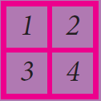
This is a square of side 2 units. It is 2 square . We write this as 2 square
2 square equal to 2 multiply 2 equal to 4
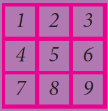
This is a square of side 3 units. It is 3 square . We write this as 3 square
page number 25
More often we write like this:
4 square equal to 16
This says “4 square is 16”
The 2 at the top stands for square and it indicates the number of times the number 4 appears in the product open bracket 4 square equal to 4 multiply 4 equal to 16 close bracket .
The numbers 1, 4, 9, 16,... are all square numbers open bracket also called perfect square numbers close bracket . Each of them is made up of the product of same two factors.
A natural number n is called a square number, if we can find another natural number m such that n equal to m square .
Is 49 a square number question mark Yes, because it can be written as 7 square . Is 50 a square number question mark
The following table gives the squares of numbers up to 20.
Number |
Its square |
Number |
Its square |
Number |
Its square |
Number |
Its square |
1 |
1 |
6 |
36 |
11 |
121 |
16 |
256 |
2 |
4 |
7 |
49 |
12 |
144 |
17 |
289 |
3 |
9 |
8 |
64 |
13 |
169 |
18 |
324 |
4 |
16 |
9 |
81 |
14 |
196 |
19 |
361 |
5 |
25 |
10 |
100 |
15 |
225 |
20 |
400 |
Try to extend the table up to 50 numbers exclamatory symbol
We can now easily verify the following properties of square numbers by referring the
table given above:
1 Is the square of a prime number, prime question mark
2 Will the sum of two perfect squares always be a perfect square question mark What about their difference and their product question mark
1 Which among 256, 576, 960, 1025, 4096 are perfect square numbers question mark
open bracket Hint: Try to extend the table of squares already seen close bracket.
2 One can judge just by look that each of the following numbers 82, 113, 1972, 2057, 8888, 24353 is not a perfect square. Explain why question mark
Page number 26
Open bracket small roman number one close bracket The square of a natural number other than 1, is either a multiple of 3 or exceeds a multiple of 3 by 1.
Open bracket small roman number two close bracket The square of a natural number, other than 1, is either a multiple of 4 or exceeds a multiple of 4 by 1.
Open bracket small roman number three close bracket The remainder of a perfect square when divided by 3, is either 0 or 1 but never 2.
Open bracket small roman number four close bracket The remainder of a perfect square, when divided by 4, is either 0 or 1 but never 2 and 3.
Open bracket small roman number five close bracket When a perfect square number is divided by 8, the remainder is either 0 or 1 or 4, but will never be equal to 2, 3, 5, 6 or 7.
Perfect numbers such as numbers. 6, 28, 496, 8128 etcetra, are not square numbers.
Note
If a perfect square number ends in zero, then it must end with even number of zeroes always. We can verify this for a few numbers in the table given below.
Number |
10 |
20 |
30 |
40 |
… |
90 |
100 |
110 |
… |
2000 |
… |
Its Square |
100 |
400 |
900 |
1600 |
… |
8100 |
10000 |
12100 |
… |
4000000 |
… |
Consider the claim: “Between the squares of the consecutive numbers n and open bracket n plus 1 close bracket , there are 2n non-square numbers”. Can it be true question mark How many non-square numbers are there between 2500 and 2601question mark Verify the claim.